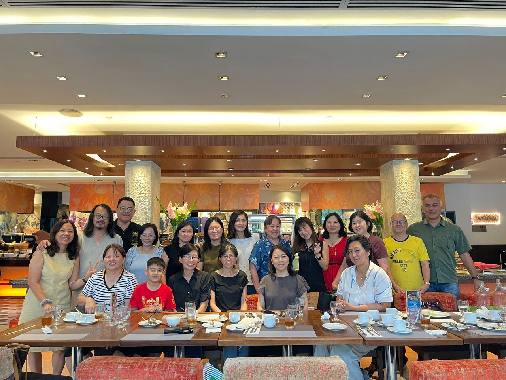
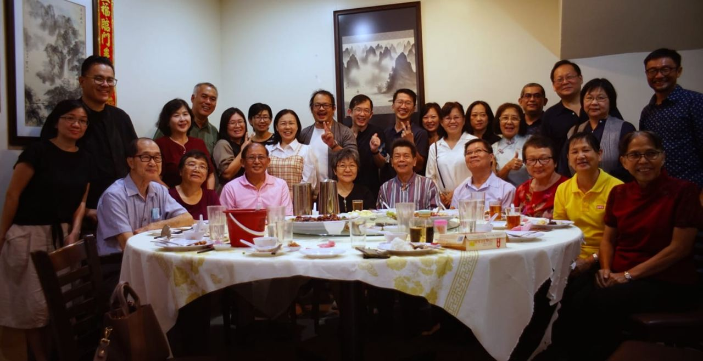
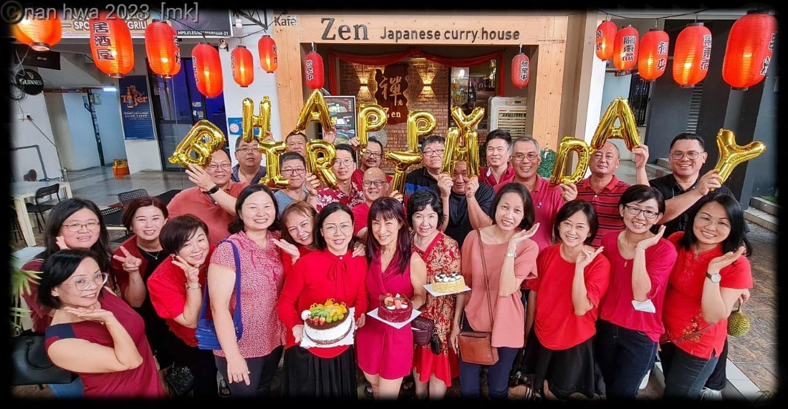

南华独中校友自发组织赞助活动
南华独中校友自发组织赞助活动
20位退休教师将出席40周年校庆
南华独中为了庆祝迁校40周年，一群热心校友自发组织了一项别具意义的赞助活动。该活动不仅获得了众多校友的积极响应，更成功邀请到20位退休教师参加8月10日晚上6时举行的校庆晚宴，充分体现了校友们对母校和恩师的深厚感情。
工委会主席暨校友何添胜董事总务表示：“我们希望通过这种方式，让更多的前任教师有机会参与这个重要的庆典。看到这么多敬爱的老师愿意出席，我们感到非常欣慰和激动。"
据悉，将出席晚宴的退休教师包括何翠芳老师(Mdm Ho)、叶绍宏老师(Aik Siew Hing)、钟群娣老师、黄素蕾老师、胡美珍老师、余深玲老师、岑丽芳老师(Ms Sam)、林玉英老师、林清清老师、李善长老师、陈黛娜老师(Ms Diana)、吴翠凤老师、林启根老师、Shamugam老师、Premala老师、卢如喜老师、郑文安老师夫妇以及曾福安老师夫妇等。这些教师的出席无疑将为校庆晚宴增添更多温馨回忆和感人时刻。
截至目前，已有超过30位校友参与赞助，用于一人资助一位教师参加晚宴。值得一提的是，即使有些校友无法亲自出席，也通过这种方式表达了对母校的支持。
这项由校友自发组织的赞助活动，不仅体现了南华独中校友对母校的深厚感情，也展示了他们对教育事业的支持。通过邀请退休教师参加晚宴，校友们成功搭建了一座跨越时空的桥梁，让不同年代的师生有机会欢聚一堂，共同回顾往昔峥嵘岁月，畅想学校的美好未来。
南华独中迁校40周年庆祝活动将于8月10日至11日举行，包括晚宴和义跑等多项活动。这次校友自发的赞助活动和退休教师的热情参与，无疑为校庆增添了更多温情和意义，展现了南华独中深厚的文化底蕴、师生间的深厚情谊以及校友们的强大凝聚力。相信这次难得的聚会将成为南华独中历史上又一个难忘的篇章。



